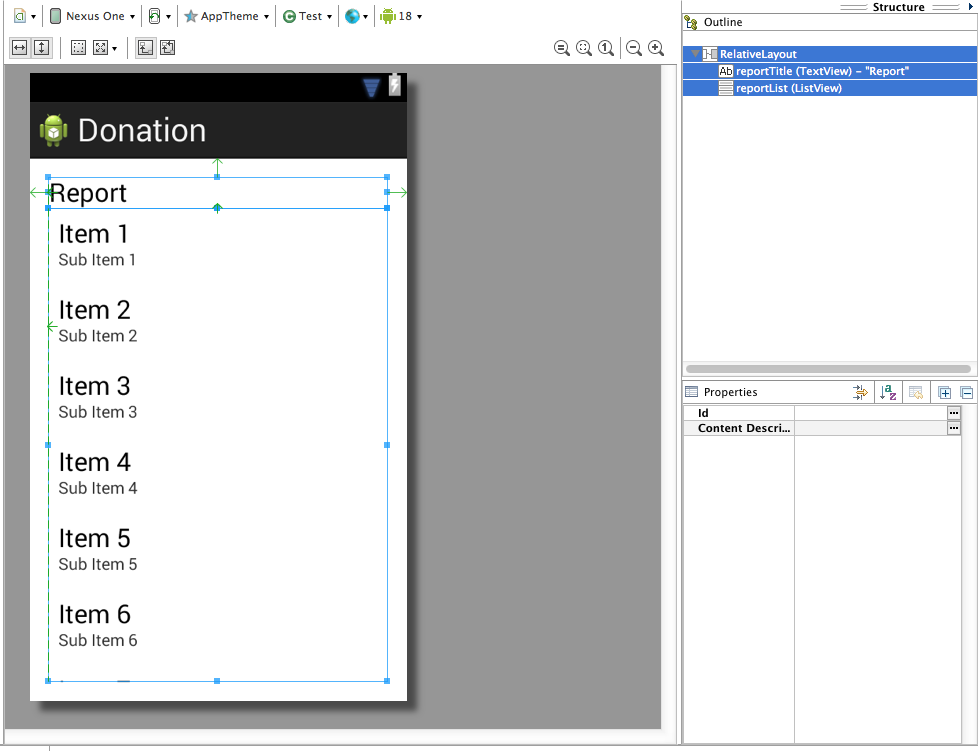
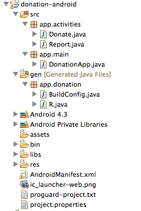

Objectives
- Enable menus to support navigation between Donate and Report
- Introduce an Application Object to host list of donations
- Introduce an Adapter to render this list
Package Name
This is a version1 of the donation-android app:
This version is a little misconfigured - we have a leftover the package name 'com.example.donation' form he project generation wizard. This can be changed by editing the AndridManifext.xml file:
<manifest xmlns:android="http://schemas.android.com/apk/res/android"
package="app.donation"
android:versionCode="1"
android:versionName="1.0" >
Once you save this - it would regenerate the correct 'gen' files. Delete the old one as we no longet need it (com.example.donation)
We should also take this opportunity to change the name of the 'donation' package to 'app.donation'. Unlike Play, android does not like packages with a single 'segment'

Menu
In Donation, introduce the following menu event handler:
@Override
public boolean onOptionsItemSelected(MenuItem item)
{
switch (item.getItemId())
{
case R.id.action_settings: Toast toast = Toast.makeText(this, "Settings Selected", Toast.LENGTH_SHORT);
toast.show();
break;
}
return true;
}
We already have a menu called 'donate.xml' in the res folder. Add a new menu item like the one shown below:
<menu xmlns:android="http://schemas.android.com/apk/res/android" >
<item
android:id="@+id/action_settings"
android:orderInCategory="100"
android:showAsAction="never"
android:title="@string/menuSettings"/>
<item
android:id="@+id/menuReport"
android:orderInCategory="100"
android:showAsAction="never"
android:title="@string/menuReport"/>
</menu>
This will require a new String in the strings.xml file:
<string name="menuReport">Report</string>
Run the app and when you press the menu hardware button and select 'settings', you should see the toast message appear.
Reports Activity
Design a new layout - called Report - to look something like this:

This is the layout file itself:
<RelativeLayout xmlns:android="http://schemas.android.com/apk/res/android"
xmlns:tools="http://schemas.android.com/tools"
android:layout_width="match_parent"
android:layout_height="match_parent"
android:paddingBottom="@dimen/activity_vertical_margin"
android:paddingLeft="@dimen/activity_horizontal_margin"
android:paddingRight="@dimen/activity_horizontal_margin"
android:paddingTop="@dimen/activity_vertical_margin"
tools:context=".Test" >
<TextView
android:id="@+id/reportTitle"
android:layout_width="wrap_content"
android:layout_height="wrap_content"
android:layout_alignParentLeft="true"
android:layout_alignParentRight="true"
android:layout_alignParentTop="true"
android:text="@string/reportTitle"
android:textAppearance="?android:attr/textAppearanceLarge" />
<ListView
android:id="@+id/reportList"
android:layout_width="match_parent"
android:layout_height="wrap_content"
android:layout_alignLeft="@+id/reportTitle"
android:layout_below="@+id/reportTitle" >
</ListView>
</RelativeLayout>
Introduce a new Class into app.activities to render this activity:
package app.activities;
import app.donation.R;
import app.main.DonationApp;
import android.app.Activity;
import android.os.Bundle;
import android.widget.ArrayAdapter;
import android.widget.ListView;
public class Report extends Activity
{
ListView listView;
static final String[] numbers = new String[] {
"Amount, Pay method",
"10, Direct",
"100, PayPal",
"1000, Direct",
"10, PayPal",
"5000, PayPal"};
@Override
public void onCreate(Bundle savedInstanceState)
{
super.onCreate(savedInstanceState);
setContentView(R.layout.activity_report);
listView = (ListView) findViewById(R.id.reportList);
ArrayAdapter<String> adapter = new ArrayAdapter<String>(this, android.R.layout.simple_list_item_1, numbers);
listView.setAdapter(adapter);
}
}
This will display a hard-coded lists of donations.
Change Donation activity to load this view when 'Report' selected from menu:
@Override
public boolean onOptionsItemSelected(MenuItem item)
{
switch (item.getItemId())
{
case R.id.menuReport : startActivity (new Intent(this, Report.class));
break;
}
return true;
}
All of this will not work until you add the activity specification to the AndroidManifest.xml file:
<activity
android:name="app.activities.Report"
android:label="@string/donateTitle" >
</activity>
Try it all now - it should load.
Application Object
In order to keep out application design coherent, we now bring in an 'Application' object.
Create a new package called 'app.main' and incorporate this class here:
package app.main;
import android.app.Application;
import android.util.Log;
public class DonationApp extends Application
{
@Override
public void onCreate()
{
super.onCreate();
Log.v("Donation", "Donation App Started");
}
}
Application objects need to be references in the AndroidManifest.xml - at the very top as 'andorid:name'
<application
android:allowBackup="true"
android:icon="@drawable/ic_launcher"
android:label="@string/app_name"
android:theme="@style/AppTheme"
android:name="app.main.DonationApp">
Your project should now look like this:

Make sure the 'Donation App Started' appears in the logs to verify that it has actually been engaged correctly.
Donation Model
Create a new package called 'models' and bring in this class here:
package app.models;
public class Donation
{
public int amount;
public String method;
public Donation (int amount, String method)
{
this.amount = amount;
this.method = method;
}
}
This is a revised version of DonationApp - which now manages a list of donations. It also centralises the 'makeDonation' event implementing it as a method. Replace your donation with this one:
package app.main;
import java.util.ArrayList;
import java.util.List;
import android.app.Application;
import android.util.Log;
import android.widget.Toast;
import app.models.Donation;
public class DonationApp extends Application
{
public final int target = 10000;
public int totalDonated = 0;
public List <Donation> donations = new ArrayList<Donation>();
public boolean newDonation(Donation donation)
{
boolean targetAchieved = totalDonated > target;
if (!targetAchieved)
{
donations.add(donation);
totalDonated += donation.amount;
}
else
{
Toast toast = Toast.makeText(this, "Target Exceeded!", Toast.LENGTH_SHORT);
toast.show();
}
return targetAchieved;
}
@Override
public void onCreate()
{
super.onCreate();
Log.v("Donation", "Donation App Started");
}
}
Refactored Donate
The Donate activity can now be completely re factored to make use of the DonationApp object.
package app.activities;
import app.donation.R;
import app.main.DonationApp;
import app.models.Donation;
import android.os.Bundle;
import android.app.Activity;
import android.content.Intent;
import android.view.Menu;
import android.view.MenuItem;
import android.view.View;
import android.widget.RadioGroup;
import android.widget.NumberPicker;
import android.widget.ProgressBar;
import android.widget.TextView;
public class Donate extends Activity
{
private RadioGroup paymentMethod;
private ProgressBar progressBar;
private NumberPicker amountPicker;
private TextView amountText;
private TextView amountTotal;
private DonationApp app;
@Override
protected void onCreate(Bundle savedInstanceState)
{
super.onCreate(savedInstanceState);
setContentView(R.layout.activity_donate);
app = (DonationApp) getApplication();
paymentMethod = (RadioGroup) findViewById(R.id.paymentMethod);
progressBar = (ProgressBar) findViewById(R.id.progressBar);
amountPicker = (NumberPicker) findViewById(R.id.amountPicker);
amountText = (TextView) findViewById(R.id.amountText);
amountTotal = (TextView) findViewById(R.id.amountTotal);
amountPicker.setMinValue(0);
amountPicker.setMaxValue(1000);
progressBar.setMax(app.target);
}
@Override
public boolean onCreateOptionsMenu(Menu menu)
{
getMenuInflater().inflate(R.menu.donate, menu);
return true;
}
@Override
public boolean onOptionsItemSelected(MenuItem item)
{
switch (item.getItemId())
{
case R.id.menuReport : startActivity (new Intent(this, Report.class));
break;
}
return true;
}
public void donateButtonPressed (View view)
{
String method = paymentMethod.getCheckedRadioButtonId() == R.id.PayPal ? "PayPal" : "Direct";
int donatedAmount = amountPicker.getValue();
if (donatedAmount == 0)
{
String text = amountText.getText().toString();
if (!text.equals(""))
donatedAmount = Integer.parseInt(text);
}
if (donatedAmount > 0)
{
app.newDonation(new Donation(donatedAmount, method));
progressBar.setProgress(app.totalDonated);
String totalDonatedStr = "$" + app.totalDonated;
amountTotal.setText(totalDonatedStr);
}
}
}
Replace your version with this and execute it.
Look carefully at the changes to this version over the v1 attempt.
Refactored Report
We now rework Report to render the actual donations - held in the DonationApp list.
First some layout additions. Include these new string in strings.xml
<string name="defaultAmount">00</string>
<string name="defaultMethod">N/A</string>
This is a new layout - to be called 'row_donate.xml'. Place this in the 'layout' folder.
<?xml version="1.0" encoding="utf-8"?>
<RelativeLayout xmlns:android="http://schemas.android.com/apk/res/android"
android:layout_width="match_parent"
android:layout_height="match_parent" >
<TextView
android:id="@+id/row_amount"
android:layout_width="wrap_content"
android:layout_height="wrap_content"
android:layout_alignParentLeft="true"
android:layout_alignParentTop="true"
android:layout_marginLeft="48dp"
android:layout_marginTop="20dp"
android:text="@string/defaultAmount" />
<TextView
android:id="@+id/row_method"
android:layout_width="wrap_content"
android:layout_height="wrap_content"
android:layout_alignBaseline="@+id/row_amount"
android:layout_alignBottom="@+id/row_amount"
android:layout_marginLeft="106dp"
android:layout_toRightOf="@+id/row_amount"
android:text="@string/defaultMethod" />
</RelativeLayout>
Finally, rework Report class to remove the hard coded values - and use a different 'adapter'
package app.activities;
import java.util.List;
import app.donation.R;
import app.main.DonationApp;
import android.app.Activity;
import android.content.Context;
import android.os.Bundle;
import android.view.LayoutInflater;
import android.view.View;
import android.view.ViewGroup;
import android.widget.ArrayAdapter;
import android.widget.ListView;
import android.widget.TextView;
import app.models.Donation;
public class Report extends Activity
{
private ListView listView;
private DonationApp app;
@Override
public void onCreate(Bundle savedInstanceState)
{
super.onCreate(savedInstanceState);
setContentView(R.layout.activity_report);
app = (DonationApp) getApplication();
listView = (ListView) findViewById(R.id.reportList);
DonationAdapter adapter = new DonationAdapter (this, app.donations);
listView.setAdapter(adapter);
}
}
This is the new adapter - DonationAdapter. You can place this at the end of the Report class (outside the closing brace) if you like:
class DonationAdapter extends ArrayAdapter<Donation>
{
private Context context;
public List<Donation> donations;
public DonationAdapter(Context context, List<Donation> donations)
{
super(context, R.layout.row_donate, donations);
this.context = context;
this.donations = donations;
}
@Override
public View getView(int position, View convertView, ViewGroup parent)
{
LayoutInflater inflater = (LayoutInflater) context.getSystemService(Context.LAYOUT_INFLATER_SERVICE);
View view = inflater.inflate(R.layout.row_donate, parent, false);
Donation donation = donations.get(position);
TextView amountView = (TextView) view.findViewById(R.id.row_amount);
TextView methodView = (TextView) view.findViewById(R.id.row_method);
amountView.setText("" + donation.amount);
methodView.setText(donation.method);
return view;
}
@Override
public int getCount()
{
return donations.size();
}
}
If all goes well - then you should be able to make donations, and and the see a list of the in the report activity.
Exercises
Project so far:
Exercise 1
Run the app and insert amounts of varying lengths (1, 222, 23, 2323). Note that the second column - payment method -may be displayed at different positions. If this happens, fix it.
Hint: each row is laid out by a row_donate.xml layout. The easiest way to fix this would be to experiment with they layout, and have the text fields aligned with the edges and not with eachother.
Exercise 2
When a donation is accepted, set the amount on screen to 0 (in both picker and text field).
Exercise 3
When you navigate from the Donate activity to reports, there will be no menu available. Bring in a menu, with two options 'Settings' and 'Donate' - Donate should bring you back to the donate screen.
Exercise 4
Introduce a new welcome screen - which should display a greeting + give the user 2 options (as simple buttons)
When Login is pressed, the app should take you directly to the Donate activity (for the moment).
Exercise 5
Introduce a Signup Activity, which should present the user with:
- First Name
- Last Name
- Email
-
Password
-
a 'Register' button.
Pressing Register should take you directly to "Donate" activity. Also, refactor the Welcome screen such that the 'signup' button takes you to this screen.
Exercise 6:
Introduce a Login activty, which should just look for
- email
-
password
-
a 'Login' button
Pressing Login should take you directly to "Donate" activity.
Exercise 7
Bring in a new menu option - 'logout'. It should take you to the welcome screen, and should be available from the donate and report activities.
Exercise 8
Introduce a 'User' into the models package to represent the user in the usual way. Maintain a list of Users in the DonationApp object. Whenever anyone registers, then create a new User object in this list.
Exercise 9
Implement the Login activity, to now only let users in to Donate if they are registered (i.e. a matching email + password in the list of users maintained by DonationApp)